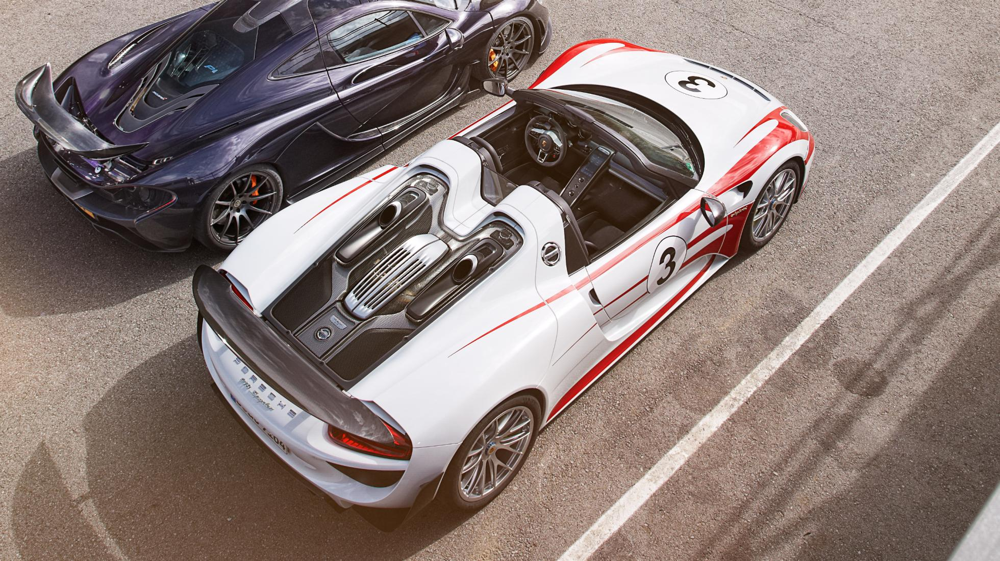
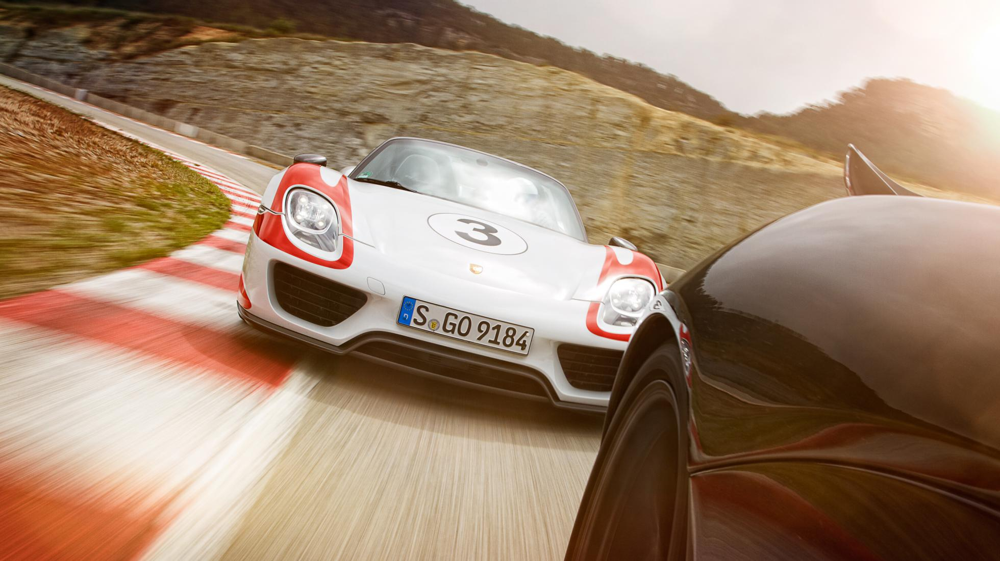
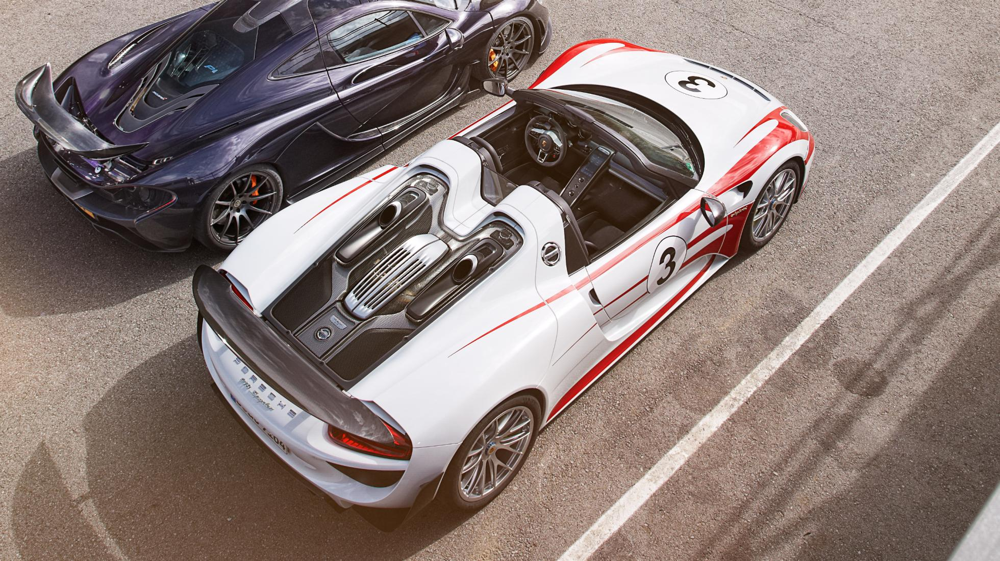
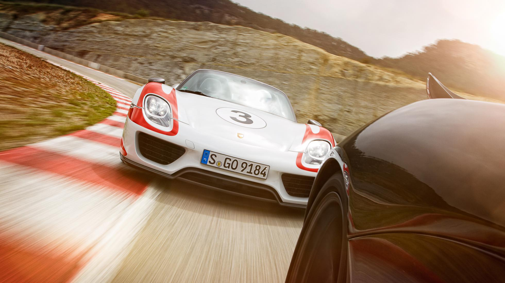
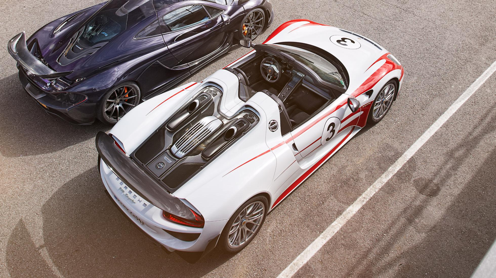
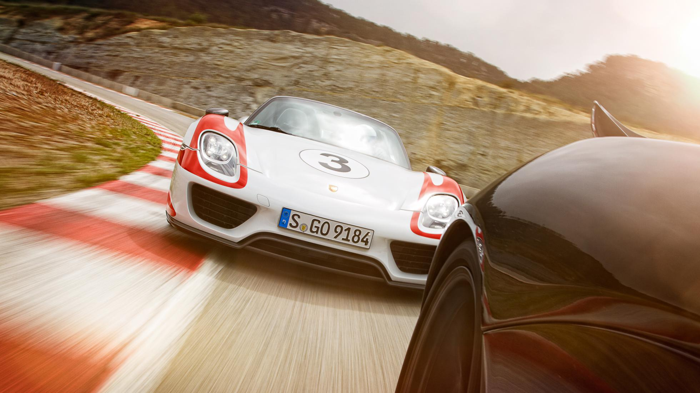

| MODELLO | Prezzo | l motore e disp. cilindri | CV | km/h | 0-100 | km/l | kg |
| WEISSACH PACKAGE | 864.500 | 4600 V8 | 887 | 345 | 2,7 | 33,2 | 1990 |


Grazie al V8 4.6 da 608 CV, abbinato a due motori elettrici, avrà una potenza complessiva di 887 CV, tanto per non far rimpiangere troppo LaFerrari e la McLaren P1, ma il suo consumo sarà a dir poco sbalorditivo: circa 3 l/100 km! E che dire poi della sua anima ecologica che garantisce emissioni di circa 70 g/km ed un'autonomia di 30 km ad emissioni zero, utilizzando solamente i propulsori elettrici. Chiaramente sarà un'auto per pochi, sia per la sua tiratura limitata che per il prezzo di circa 800.000 euro. Per gli incontentabili sarà disponibile anche il pacchetto denominato Weissach Package con tanto di livree in stile racing, particolari in Carbonio e sedili da corsa.